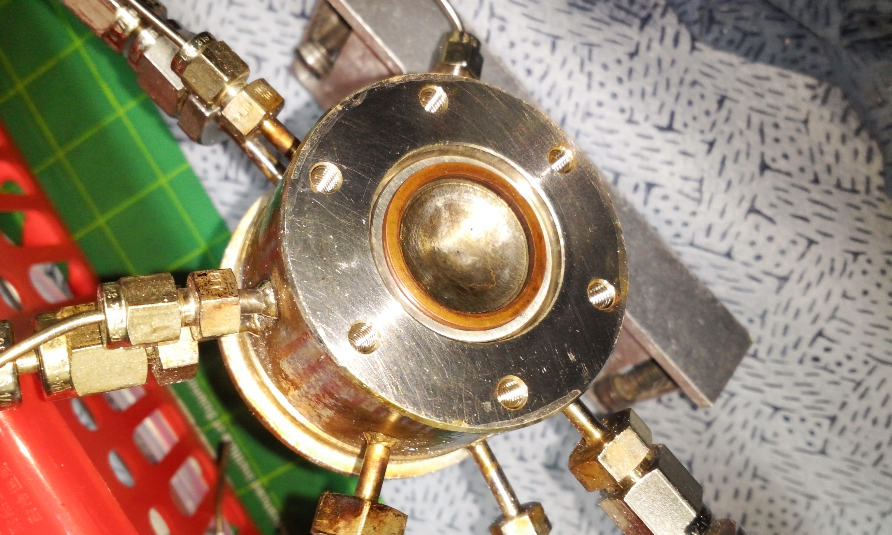
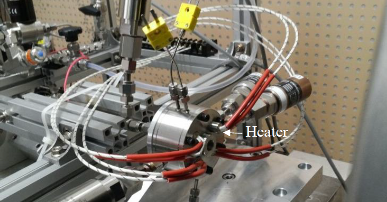
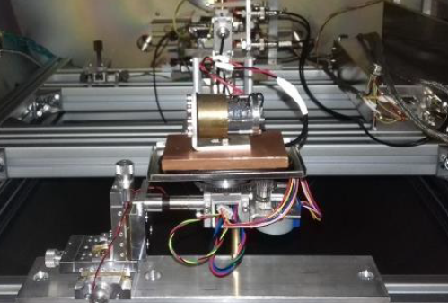

Maxime Monette
Space propulsion engineer with international experience in mechanical design, chemical propulsion and hot-fire testing, electric propulsion and plasma diagnostics, breakthrough propulsion and high-resolution thrust measurements, flight-relevant hardware, environmental testing, modeling, mission and data analysis.
Projects
- Thrust signal analysis demo
- Low-thrust mission analysis demo
- Sensor calibration and uncertainty propagation
Links
Publications
Click to show/hide publications list
- Monette, M., et al., "Morpheus GO-2 IOD: In-orbit Demonstration of a 40-Thruster FEEP System", 39th International Electric Propulsion Conference, 2025. Link
- Monette, M., Jentzsch, C., Kößling, M., and Tajmar, M., “Vacuum Pendulum Test for a Modified Kaluza–Klein Theory,” International Journal of Modern Physics A, Vol. 39, No. 4, 2024, Article 2450020. Link
- Monette, M., Stark, W., and Tajmar, M., “ Centrifugal Balance for the Detection of Mass Fluctuations in Advanced Propulsion Concepts,” Acta Astronautica, Vol. 212, 2023, pp. 270–283. Link
- Monette, M., “Experimental Investigations of the Mach-Effect for Breakthrough Space Propulsion,” 2023. Link
- Monette, M., Kößling, M., and Tajmar, M., “Experimental Investigation of Mach-Effect Thrusters on Torsion Balances,” Acta Astronautica, Vol. 182, 2021, pp. 531–546. Link
- Monette, M., Kößling, M., Neunzig, O., and Tajmar, M., “Space Propulsion 2020+.” Space Propulsion Conference 2020+1, 2021. Link
- Monette, M., Kößling, M., and Tajmar, M., “The SpaceDrive Project—Progress in the Investigation of the Mach-Effect-Thruster Experiment,” 36th International Electric Propulsion Conference, 2019. Link
- Kößling, M., Monette, M., Weikert, M., and Tajmar, M., “The SpaceDrive Project—Thrust Balance Development and New Measurements of the Mach-Effect and EMDrive Thrusters,” Acta Astronautica, Vol. 161, 2019, pp. 139–152. Link
- Tajmar, M., Kößling, M., Weikert, M., and Monette, M., “The SpaceDrive Project—Developing Revolutionary Propulsion at TU Dresden,” Acta Astronautica, Vol. 153, 2018, pp. 1–5. Link
- Tajmar, M., Kößling, M., Weikert, M., and Monette, M., “The SpaceDrive Project—First Results on EMDrive and Mach-Effect Thrusters,” Space Propulsion Conference, Seville, Spain, 2018. Link
- Monette, M., Baek, S., Kim, J., Jung, Y. S., Kim, W., Jo, Y., Lee, J., and Kwon, S., “5 N Scale Preliminary Thruster Test with an ADN-Based Monopropellant,” Journal of the Korean Society of Propulsion Engineers, Vol. 22, No. 2, 2018, pp. 29–37. Link
- Baek, S., Monette, M., and Kwon, S., “Performance Evaluation of SiO2-Al2O3 Catalyst Support for High-Performance Green Monopropellant Thruster,” 2018 Joint Propulsion Conference, AIAA Paper 2018-4853, 2018. Link
- Baek, S., Monette, M., Jung, Y. S., Kim, J., Kim, W., Jo, Y., Yoon, H., Lee, J., and Kwon, S., “Catalytic Combustion of ADN-Based High-Performance Green Monopropellant,” Proceedings of the Korean Society of Propulsion Engineers Conference, 2017, pp. 739–745. Link
- Monette, M., “Sol-Gel Supports for Catalytic Ignition in Energetic Green Monopropellant Thrusters,” Korea Advanced Institute of Science and Technology, 2017. Link
- Monette, M., and Kwon, S., “Recent Developments in HAN- and ADN-Based Monopropellant Thrusters,” Proceedings of the Korean Society of Propulsion Engineers Conference, 2015, pp. 82–87. Link
- Monette, M., and Kwon, S., “친환경 추진제 HAN 과 ADN 추력기 개발,” 2015 년 제 45 회 한국추진공학회 추계학술대회, 2015. Link
- Monette, M., Lee, J., and Kwon, S., “한국 달 탐사 임무 수행을 위한 궤도 설계 및 분석,” 한국항공우주학회 2015 추계학술대회, 2015. Link
Gallery


